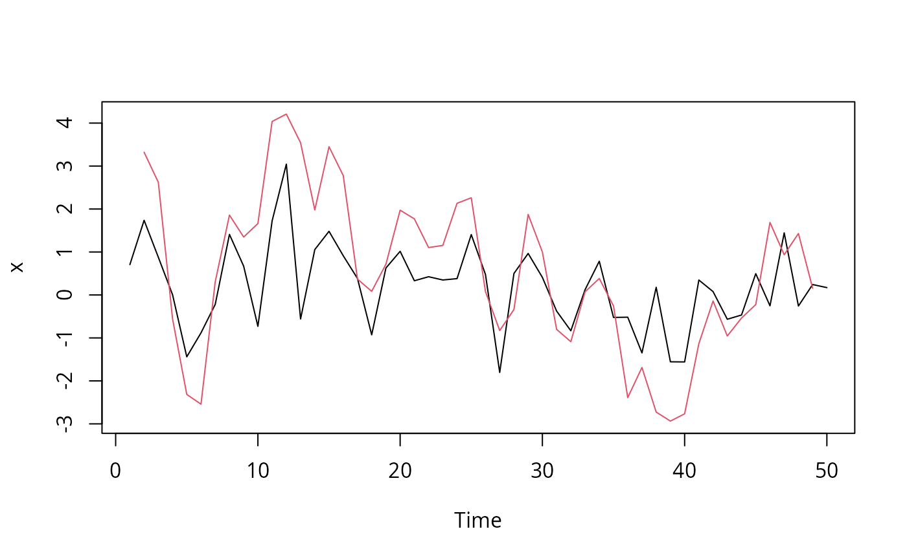

Linear filtering on a time series
stats-filter.RdApplies linear filtering to a univariate "timeSeries".
Usage
# S4 method for class 'timeSeries'
filter(x, filter, method = c("convolution", "recursive"), sides = 2,
circular = FALSE, init = NULL)Arguments
- x
an object from class
"timeSeries".- filter
coefficients of the filter.
- method
"convolution"or"recursive".- sides,circular
-
for convolution filters only. Onesided if
sides = 1, centred around lag 0 ifsides = 2. Circular ifcircular = TRUE. - init
-
for recursive filters only. Values before the start of the time series.
Details
filter is a generic function with default method
stats::filter. The method for "timeSeries" is a wrapper
for the latter.
See ?stats::filter for details about the arguments.
See also
base R function filter
Examples
## Creata a dummy signal 'timeSeries' -
data <- matrix(rnorm(100), ncol = 2)
s <- timeSeries(data, units=c("A", "B"))
head(s)
#>
#> A B
#> [1,] 0.706060014 0.4034617
#> [2,] 1.737579745 1.1048684
#> [3,] 0.877895632 -1.3096252
#> [4,] 0.006839866 -0.6550923
#> [5,] -1.439690971 0.9025630
#> [6,] -0.881909231 -0.5051588
## Filter the series -
f <- filter(s, rep(1, 3))
head(f)
#>
#> A B
#> [1,] NA NA
#> [2,] 3.3215354 0.1987049
#> [3,] 2.6223152 -0.8598490
#> [4,] -0.5549555 -1.0621545
#> [5,] -2.3147603 -0.2576880
#> [6,] -2.5417393 1.8277331
## Plot and compare the first series -
plot(cbind(s[, 1], f[, 1]), plot.type="s")
